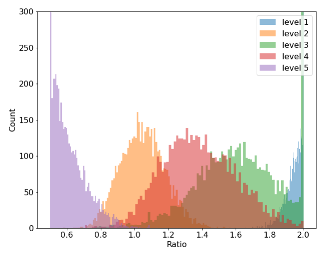
尺度感知注意力学到的尺度比值（高分辨率层学习权重 ÷ 低分辨率层学习权重）分布，统计自 COCO val2017 全部图像。level 5 的高分辨率特征图权重被调向低分辨率、level 1 的低分辨率特征图权重被调向高分辨率 —— 不同层级的尺度差异被平滑，证明尺度感知注意力学习有效。
把检测头的输入看成「层级 × 空间 × 通道」的三维张量，将尺度感知、空间感知、任务感知统一为张量上三个串联的注意力 —— 即插即用提升各类检测器 1.2 ∼ 3.2 AP，COCO test-dev 54.0 AP，配合 Transformer 骨干与额外数据推至 60.6 AP。
把特征金字塔缩放对齐后拼接成的检测头输入看作 L × S × C 三维张量，把各类头端改进统一为同一张量上的注意力学习问题。
沿三个维度依次作用：尺度感知 πL 按语义重要性动态融合层级，空间感知 πS 借可变形卷积稀疏采样聚焦判别区域，任务感知 πC 动态开关通道适配下游任务。
作为插件块接入 Faster R-CNN、RetinaNet、ATSS、FCOS、RepPoints，覆盖两阶段/一阶段、anchor-based/anchor-free、基于框/基于点的多种设定，一致提升 1.2 ∼ 3.2 AP。
配 ResNeXt-101-DCN 在 COCO test-dev 取得 54.0 AP，训练时间仅为 EfficientDet / SpineNet 的 1/20；结合 Transformer 骨干与自训练额外数据推至 60.6 AP。
图像中不同尺度的物体常常并存，检测头应当让特征强度随物体尺度自适应 —— 这关系到特征张量的层级维度。
物体在不同视角下呈现差异巨大的形状、姿态与位置，检测头应当能学习空间变换 —— 这关系到空间位置维度。
边界框、中心点、关键点等物体表示各有全然不同的训练目标与约束，检测头应当按任务重组特征 —— 这关系到通道维度。
现状：改进特征金字塔与路径增强的工作聚焦尺度问题，可变形卷积一系的工作聚焦空间变换学习，各式物体表示的工作聚焦任务建模 —— 彼此之间缺少一个统一的视角，暂未有工作把三种感知能力放进同一个检测头框架中同时优化。
| L | 特征金字塔的层级数；层间特征差异关系物体尺度 |
| S = H × W | 中间层特征的空间位置数；空间位置差异关系几何变换 |
| C | 中间层特征的通道数；通道差异关系任务与物体表示 |
算例：设某通道特征切片 Fc = 1，超函数输出 α1 = 0.5、β1 = 0.2、α2 = −0.3、β2 = 0.4。第一条分支 0.5 × 1 + 0.2 = 0.7；第二条分支 −0.3 × 1 + 0.4 = 0.1；取 max 后该通道输出 0.7。两条仿射分支中哪条占优由输入统计动态决定，通道因此被按需「打开」或「关闭」，呈现分段线性的任务自适应特性。
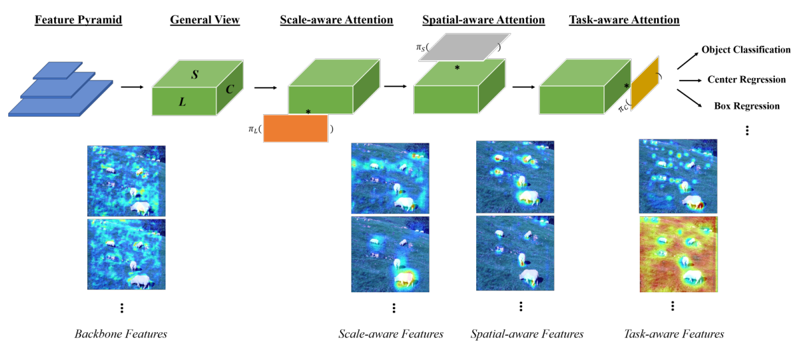
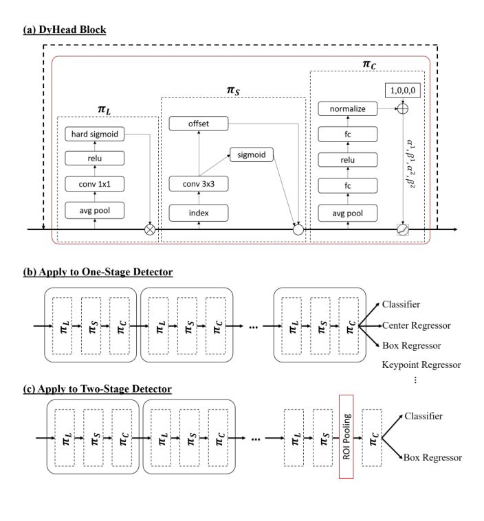
可变形卷积通过稀疏采样改进传统卷积的变换学习，可视为只建模了空间维度。它已被广泛用于检测骨干，但很少用在检测头；骨干中的可变形模块与 DyHead 互补。
Non-Local Networks 用点积形式融合不同空间位置的特征来增强像素特征，可视为只建模了层级与空间两个维度。
Transformer 用多头全连接层学习跨注意力对应、融合不同模态特征，可视为只建模了空间与通道两个维度。
这三类注意力都只部分建模了特征张量的子维度；DyHead 把不同维度上的注意力合并成一个连贯且高效的实现，并显式对应检测任务的三类挑战 —— 相比之下既有方案的工作原理是隐式的。这正是实验部分显著收益的来源。
· 80 类、约 160K 张网络图像；train2017 / val2017 / test2017 分别含 118K / 5K / 41K 张。
· 所有实验只用 train2017 训练、不使用任何额外数据；消融在 val2017 上评测，与 SOTA 对比时报告 test 服务器返回的 test-dev 官方结果。
· 指标为 COCO 风格 AP，含 AP、AP50、AP75、APS、APM、APL。
· DyHead 块以插件形式实现；未特别说明时用 ATSS 训练框架。
· 单计算节点 8 张 V100 32GB；消融全部用 ResNet-50 + 标准 1x 配置，其余模型用 2x。
· 初始学习率 0.02、weight decay 1e−4、momentum 0.9，学习率在训练轮次的 67% 与 89% 处乘 0.1。
· 增强只用随机水平翻转；为与多尺度输入方法对比，部分模型采用多尺度训练。
推理与「不用 trick」声明：与使用测试时增强的方法对比时采用多尺度测试；未使用 model EMA、mosaic、mix-up、label smoothing、soft-NMS 或自适应多尺度测试等技巧 —— 因此精度增益可归因于 DyHead 本身。
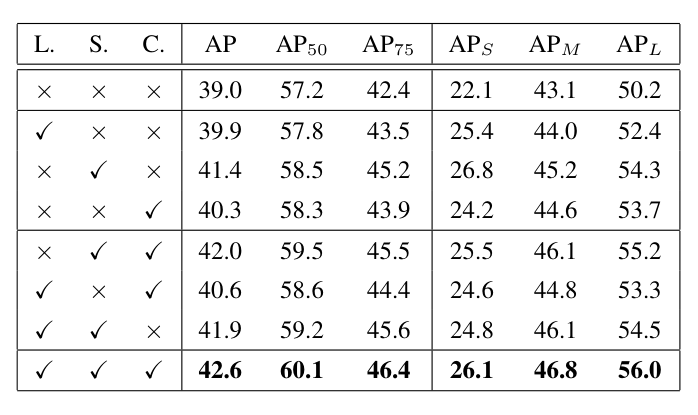

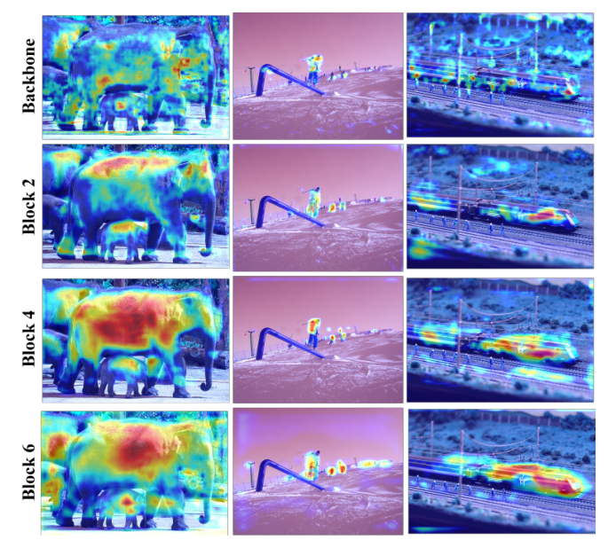
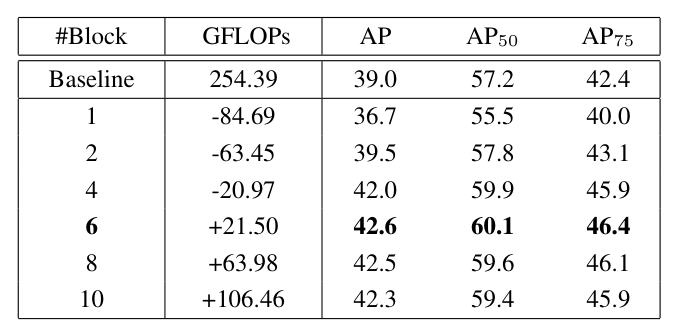
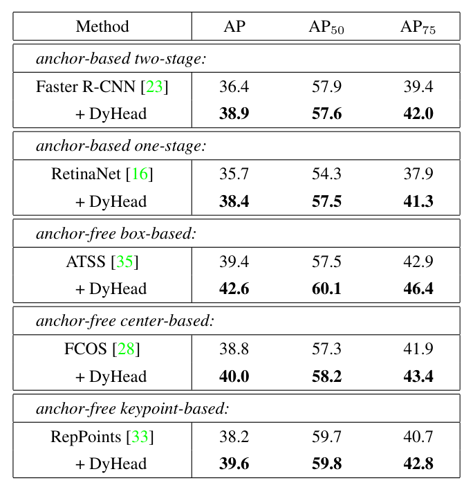
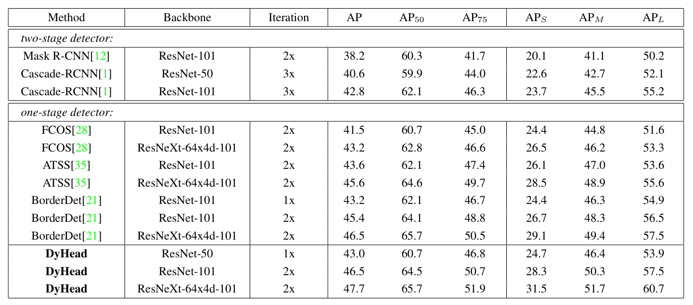
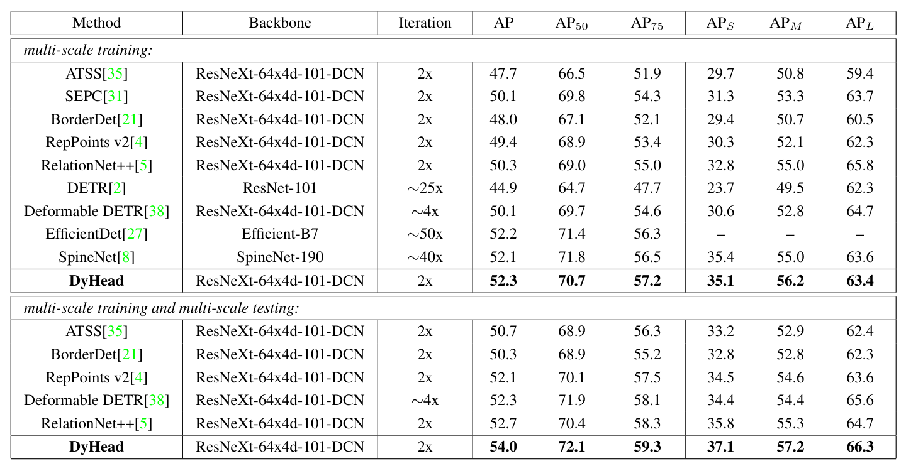
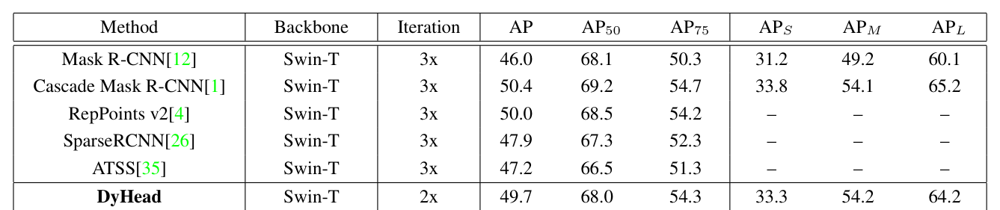
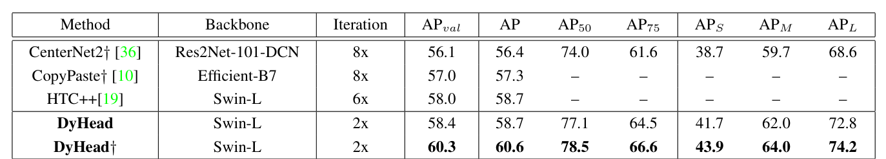
把尺度、空间与任务感知统一为三维张量上的注意力学习，将 Deformable、Non-Local 与 Transformer 收纳为子维度特例。
作为插件块可接入一阶段与两阶段等各类检测器并一致带来 1.2 ∼ 3.2 AP 提升；2 个块即超基线且计算更低，6 个块的额外开销相对骨干可忽略。
用单一统一分支替代多个任务特定子网，同时完成分类与回归等任务，简化了一阶段检测器的头端设计，对 YOLO 系列的检测头轻量化改造具有直接借鉴意义。
消融、可视化、泛化与 SOTA 对比环环相扣，在 COCO test-dev 上取得 54.0 AP 并推至 60.6 AP 新纪录。